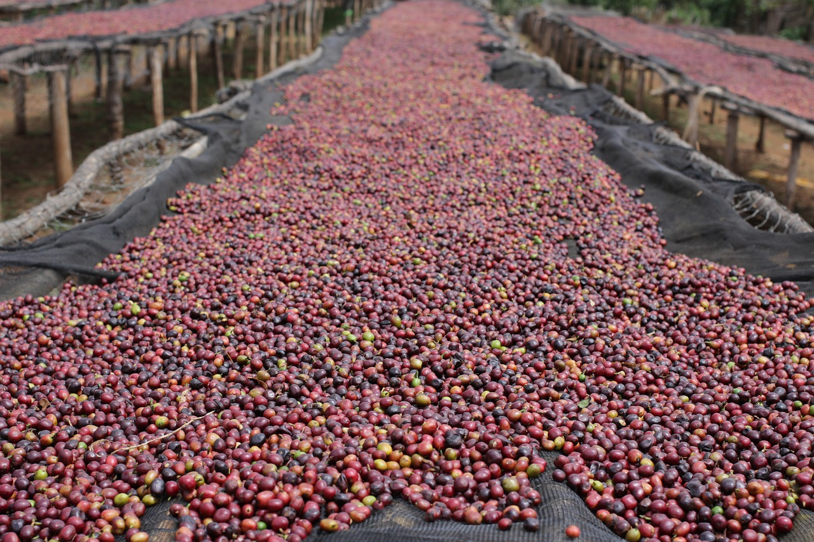
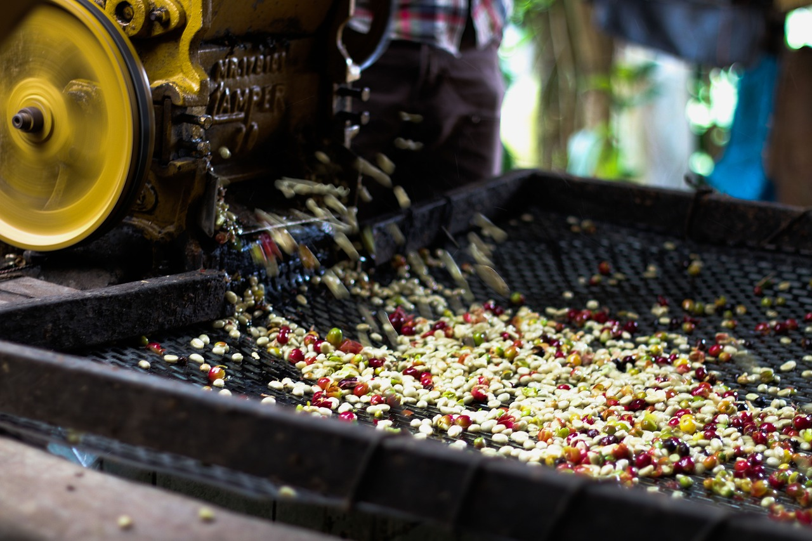
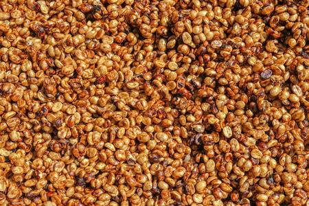

日曬
日曬法(Dry process/Natural method)是咖啡豆最古老、最原始的處理法。一千多年前，阿拉伯人就以此法處理咖啡。是將採收的咖啡櫻桃放置在露台上直接曝曬，直接接收陽光曝曬(大約需要27天-30天)，把水分從60%曬到只剩下12%左右完成。這個處理法，概念很簡單、不太花錢，但是有很多的變數與風險；有很長一段時間是用在處理品質不是這麼好的豆子上。

水洗
水洗法(Wet process/Washed method)是由荷蘭人於18世紀發明的技術，適合多雨的地區，雖然過程相當繁瑣，但卻是目前較為普遍的生豆處理法，佔約70%的咖啡總量。將採收的漿果以去果皮機將大部分的果肉從咖啡豆上分離，再將帶殼豆導引至一個乾淨的水槽裡，浸泡在水中進行發酵以徹底去除殘餘的果肉層。透過水處理，未熟豆及瑕疵豆會因為浮力的關係而被挑選出來，發酵的過程也比較好控制，因此風味上不像日曬豆有雜味，而是呈現明顯果酸、複雜度稍強以及更乾淨(沒有任何負面風味的存在，像是澀感或尖銳感)的杯中特質。但也是因為太過「乾淨」，風味的豐富度也稍弱。

蜜處理
蜜處理(Honey Process/Miel Process)的意思來自於曝曬前咖啡豆很黏的果膠層，黏的感覺如蜜一般；當咖啡果肉與咖啡豆分離時，外圍包覆著的果膠層經過曝曬，吸收空氣中的濕氣而使果膠層變黏。這裡的「蜜」是指咖啡果肉的黏膜層。採收後的果實一樣會以果皮機剝除外果皮，留著果肉經過日曬，讓果肉的甜度可以進入到豆子，又不用像日曬法花這麼長的時間。


百勝村咖啡莊園
地址：南投縣國姓鄉北港村國姓路87-9號(糯米橋右側)
這間休閒民宿位於省道台 21 線旁的咖啡農場上，可欣賞群山環繞的景緻，距離北港溪糯米石橋 1 公里，距離中台禪寺的花園 15 公里。